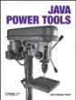
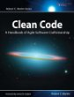

Effective Java by Joshua Bloch (2nd edition, 2008)
Effective Java by Joshua Bloch (2nd edition, 2008)
If you are using a code coverage tool like EclEmma you're either forced by your managers to do so – or you have some substantial interest in software quality. In the latter case the following recent books might help you to improve your skills in producing high quality systems:
 Java Power Tools by John Ferguson Smart (2008)
Describes many powerful tools not only for Java developers and is – as far as know – the first printed book that talks about EclEmma for code coverage.
This book at: Amazon.com Amazon.de
 Clean Code by Robert C. Martin (2009)
A clean code base is the foundation of a reliable and maintainable software system. Robert C. Martin provides pragmatic guidelines to produce clean code and gives heuristics to detect flaws in a existing projects.
This book at: Amazon.com Amazon.de
Effective Java by Joshua Bloch (2nd edition, 2008)
A comprehensive collection of best practices for using the Java language and its APIs. Especially experiences programmers will get valuable hints from each of the 78 short chapters.
This book at: Amazon.com Amazon.de
Wikipedia: "Code coverage" - Starting point with a long list of references and tools.
Steve Cornett: "Code Coverage Analysis" - A comprehensive description of different coverage measures.
Tony Obermeit: "Code Coverage Lessons" - Read why Tony recommends 100% code coverage for your test suites.
Andrew Glover: "Don't be fooled by the coverage report" - This article shows some risks when misusing coverage reports in projects.
Cenqua: Clover - A powerful commercial coverage plug-in.
Coverlipse - Coverage plug-in available under CPL.
Java Code Coverage Tools Evaluation by Lance Finney, 2004/09/17
Presentation: Emma and Cobertura by Daniel Shaefer, 2007/02/19
EclEmma is listed in the following directories along with many other useful tools and Eclipse plug-ins. The first two sites allow you to tell others your opinion about EclEmma.
Eclipse Plugin Central - Comprehensive Eclipse plug-in directory operated by the Eclipse Foundation.
Eclipse-Plugins.info - Another Eclipse plug-in directory.
Opensourcetesting.org - Impressive collection of open source testing tools.
JavaToolbox.com - Directory by Fabrice Marguerie listing tools, libraries and plug-ins for Java/J2EE development.
EclEmma by Benjamin Muskalla, Eclipse Magazin Vol. 11, 2007/06/05 [de]
Coverage Test Made Easy with EclEmma by Dr. James Gan, 2007/05/17 [zh]
EclEmma by Martin Ellis, 2009/02/27
EclEmma, a code coverage plugin for Eclipse by Chris Bartling, 2008/12/05
Code Coverage en Eclipse by José Manuel Beas, 2008/08/08 [es]
Of EMMA's and Eclipse's by Shyam Seshadri, 2008/07/20
Using EclEmma to Write Better Unit Tests by Eric Anderson, 2008/05/08
Code Coverage for Eclipse redeux: EclEmma by Kevin Klinemeier, 2008/01/08
Great Code Coverage Plugin for Eclipse by Merlyn Albery-Speyer, 2007/11/04
Eclipse-Emma-Plugin: EclEmma by Dirk Meister, 2007/05/17 [de]
Free and Excellent Code Coverage for Eclipse by Howard Lewis Ship, 2007/05/16
Keep Cover! by Uwe Schaefer, 2007/04/13
Eclemma... one of the best eclipse plugins I've seen in a while! by Josh, 2007/03/28
Attention... Outil d'aide au développement fantastique by Stéphane Traumat, 2007/03/06 [fr]
EclEmma, de lo mejor en cuanto a cobertura de código by Martin Perez, 2007/02/28 [es]
Eclipse Code Coverage with EclEmma by Geoffrey Wiseman, 2007/02/19
EclEmma by Shane Bell, 2007/02/05
Eclipse Emma Plug-in by Brett Dubroy, 2006/12/01
Code Coverage while you work: EclEmma by John Brugge, 2006/11/23
EclEmma by Bob McCune, 2006/11/22
EclEmma - Java Code Coverage by Venukb, 2006/11/22
Code coverage on Eclipse: EclEmma by Andres Almiray, 2006/11/14
Search for latest blogs about EclEmma at Google.